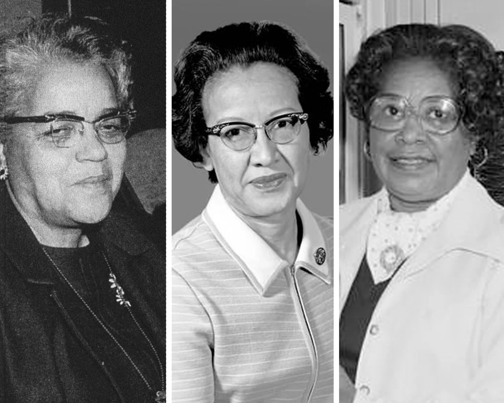

The Real Hidden Figures

Mary Jackson, Katherine Johnson, and Dorothy Vaughan
are three women that changed the face of technology at
NASA. They were responsible for the launch of John Glen,
an astronaut, into orbit.
Explore Their History!
Mary Jackson
- Graduated from Hampton Institute with a dual degree in mathematics and physical sciences in 1942
- Worked as a mathematician at the Langley Memorial Aeronautical Laboratory in 1951
Click Here!
Katherine Johnson
- From young, she was academically advanced and skipped several years ahead of her age
- Her math equations were used in the same lectures that engineers to learn information for the spaace race
Click Here!
Dorothy Vaughan
- Early career was a math teacher in Farmville,virgina
- Made sure that employees received raises and promotions if deserved when she the first black NASA supervisor in 1949
Click Here!